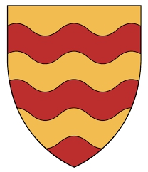

Greve av Menteith.
mellan 1189 och 1198.
Gille Críst är den första kända Mormaer (i Skottland , en regional eller provinsiell härskare, motsvarande latin kommer , fransk comte och engelsk earl ) av Menteith , men nästan säkert inte den första. Han är namngiven i en stadga av kung Máel Coluim IV , daterad till 1164, angående restaureringen av Scone Priory , som nyligen hade förstörts av brand. Han dyker upp igen i en stadga av kung Vilhelm Lejonet , daterad 1175x1178, som ett av vittnena till ett beviljande av privilegier till den nyinrättade burgh of Glasgow.
Gille Críst hade två kända söner, Muireadhach Mór och Muireadhach Óg . Han hade också en dotter, Éua , som gifte sig med Ailín II, Earl of Lennox .
Gille Críst hade dött 1189/1198, när Muireadhach Mór framträder som Mormaer för första gången.